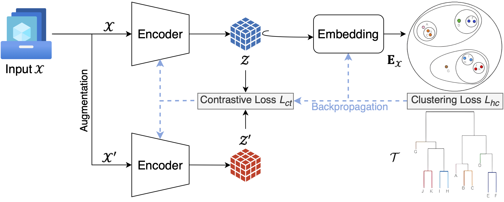
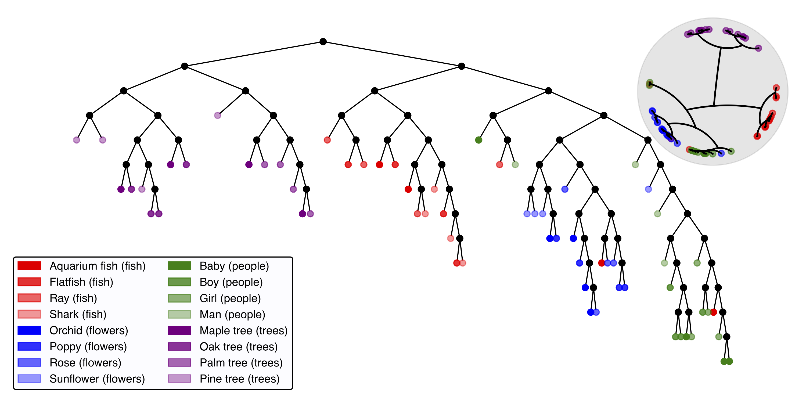

Hierarchical information extraction via encoding and embedding.
Analyzing large-scale datasets, especially involving complex and high-dimensional data like images, is particularly challenging. While self-supervised learning (SSL) has proven effective for learning representations from unlabeled data, it typically focuses on flat, non-hierarchicalstructures, missing the multi-level relationships present in many real-world datasets. Hierarchical clustering (HC) can uncover these relationships by organizing data into a tree-like structure, but it often relies on rigid similarity metrics that struggle to capture the complexity of diverse data types. To address these we envision InfoHier, a framework that combines SSL with HC to jointly learn robust latent representations and hierarchical structures. This approach leverages SSL to provide adaptive representations, enhancing HC’s ability to capture complex patterns. Simultaneously, it integrates HC loss to refine SSL training, resulting in representations that are more attuned to the underlying information hierarchy. InfoHier has the potential to improve the expressiveness and performance of both clustering and representation learning, offering significant benefits for data analysis, management, and information retrieval.

